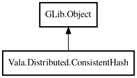

ConsistentHash
Object Hierarchy:

Description:
public class ConsistentHash : Object
Consistent hash ring with virtual nodes.
ConsistentHash minimizes key remapping when nodes are added or removed. It is suitable for cache sharding and distributed routing.
Example:
var ring = new ConsistentHash ();
ring.addNode ("node-a");
ring.addNode ("node-b");
string? node = ring.getNode ("user:42");
Content:
Creation methods:
Methods:
- public bool addNode (string nodeId)
Adds physical node to ring.
- public void clear ()
Clears all nodes and virtual ring state.
- public bool containsNode (string nodeId)
Returns whether node exists.
- public HashMap<string,int> distribution (ArrayList<string> sampleKeys)
Returns key distribution across nodes for samples.
- public string? getNode (string key)
Returns assigned node for key.
- public ArrayList<string> getNodes (string key, int count)
Returns up to count distinct nodes for replicas.
- public int nodeCount ()
Returns physical node count.
- public double rebalanceEstimate (ArrayList<string> sampleKeys)
Estimates remapping ratio when one node is added.
- public bool removeNode (string nodeId)
Removes physical node from ring.
- public int virtualNodeCount ()
Returns total virtual node count.
- public ConsistentHash withVirtualNodes (int replicas)
Sets virtual node count per physical node.
Inherited Members:
All known members inherited from class GLib.Object
- @get
- @new
- @ref
- @set
- add_toggle_ref
- add_weak_pointer
- bind_property
- connect
- constructed
- disconnect
- dispose
- dup_data
- dup_qdata
- force_floating
- freeze_notify
- get_class
- get_data
- get_property
- get_qdata
- get_type
- getv
- interface_find_property
- interface_install_property
- interface_list_properties
- is_floating
- new_valist
- new_with_properties
- newv
- notify
- notify_property
- ref_count
- ref_sink
- remove_toggle_ref
- remove_weak_pointer
- replace_data
- replace_qdata
- set_data
- set_data_full
- set_property
- set_qdata
- set_qdata_full
- set_valist
- setv
- steal_data
- steal_qdata
- thaw_notify
- unref
- watch_closure
- weak_ref
- weak_unref